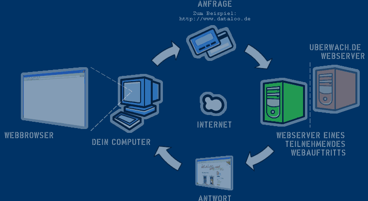

Schritt 1:
Was passiert eigentlich wenn ich eine der teilnehmenden Webseiten besuche und welche Daten werden dorthin übertragen?

Erläuterung
Du rufst in deinem Webbrowser auf deinem Computer eine Webseite auf. Der Computer sendet durch das Internet eine Anfrage an den betreffenden Webserver. Dieser sendet an deinen Computer eine Antwort zurück, die von deinem Webbrowser dargestellt wird. Da eine Webseite meist aus mehreren Elementen (der HTML-Quelltext, die Bilddateien etc.) besteht, werden entsprechend viele Anfragen an den Webserver gestellt und beantwortet.
Welche Daten werden an den Webserver übertragen?
Eine Anfrage enthält in der Regel neben weiteren diese Daten:
- Die IP-Adresse deines Internetzugangs
- Die URL der angefragten Webseite
- Die URL der verweisenden Webseite (falls du über eine andere Webseite auf diese Webseite gekommen bist)
- Die Kennung deines Webbrowser, die in der Regel den Softwarenamen inkl. Versionsnummer, sowie Details zum verwendeten Betriebssystem umfasst
Was passiert mit den Daten auf dem angefragten Webserver?
Diese Daten werden zusammen mit Datum und Uhrzeit der Anfrage auf dem Webserver in einer sogenannten Webserver-Logdatei gespeichert und können dann weiter verarbeitet und analysiert werden.